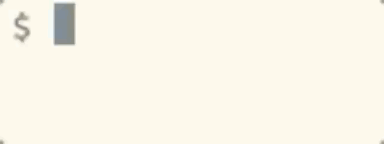
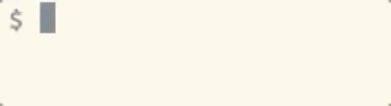
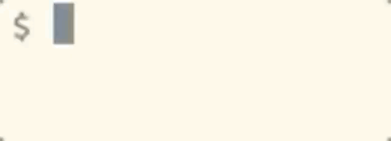
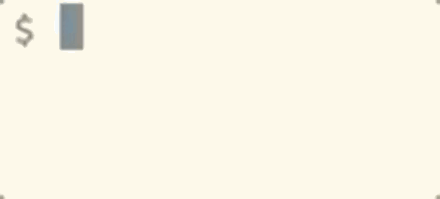

month (01-12)
0
time in format hh:mm:ss AM/PM
0


date [OPTION]... [+FORMAT]
Format:
| Lowercase | Uppercase | |
|---|---|---|
| a | abbreviated weekday | full weekday |
| b | abbreviated month  |
full month
|
| c | same as date without timezone  | first two digits of year aka the century  |
| d | day of the month 0 |
date in format MM/DD/YY
|
| e | day of the month | -- |
| f | -- |
full date YYYY-MM-DD
|
| g | last two digits of year | full year |
| h | same as %b | hour (00-23) 0 |
| i | -- | hour (00-12) 0 |
| j | day of year (000-366) 0 | -- |
| k | hour ( 0-23) | -- |
| l | hour ( 0-12) | -- |
| m |
month (01-12)
0
|
minute (00-59) 0 |
| n | newline  | -- |
| o | -- | -- |
| p | AM or PM | -- |
| q | -- | -- |
| r |
time in format hh:mm:ss AM/PM
0
|
time in format hh:mm 0 |
| s | seconds since epoch | seconds (00-61) 0 |
| t | tab | time in format hh:mm:ss |
| u | number of weekday (1-7) 1 is Monday | week number of year (00-53) Sunday as first day 0 |
| v | date in format like 22-Dec-2019 | same as %U except (01-53) Monday as first day |
| w | number of weekday (0-6) 0 is Sunday |
same as %U except Monday as first day
|
| x |
locale's date format
|
locale's time format |
| y | same as %g | same as %G |
| z | numerical time zone | time zone abbreviation |